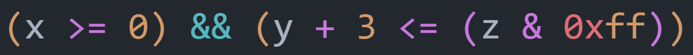

PA 2-3 note
✍ 228 words | 🐛 58 codelines | ⏰ 1 min read | Enjoy 🎶
Bonus PA，实现了有奖励，不实现没有惩罚，而且可以部分实现获得小的 bonus
内容参考 ICSPA (RISC-V ver) 1-2 ：表达式求值 · GitBook
表达式求值
让程序完成表达式的求值分两步：
1- 词法分析：让程序理解表达式的内容
2- 求值：根据词法分析掌握的内容进行实际求值
词法分析
简单来说就是区分一个表达式的不同组成：
1 | |
比如上面的随手写的表达式，如果你把它丢进 VSCode 中，设置语言为 C 语言，是这样的

在 VSCode 的渲染下，运算符为紫色，常数为黄色（十六进制前缀为红色），逻辑符为蓝色，变量为白色，括号按照层级顺序逐层渲染为不同的颜色。这就是词法分析的结果
每一个单元（一个运算符，一个常数，等等）被称为 token，而词法分析的作用就是识别每一个 token 对应了什么内容
有哪些类型的 token ？/nemu/src/monitor/expr.c 中有枚举：
1 2 3 4 5 6 7 8 9 10 11 | |
我们先实现最简单的四则运算 token
1 2 3 4 5 6 7 8 9 10 11 12 13 14 15 16 17 18 19 | |
注意到减号和乘号有重复定义，应该如何处理？
每一种不同的定义都应该分开枚举以避免解释时冲突；区分同一个符号的不同定义在之后完成，这个之后再说
接下来是定义这些 token 分别由哪些单元对应：
1 2 3 4 5 6 7 8 9 10 11 12 13 14 | |
为什么这里填写的内容不是 {" ", NOTYPE} 和 {"+", ADD}？
首先，为了识别 token 的便捷性（以及不必要的搓板子环节），我们使用了 POSIX regex 正则表达式来简化匹配的逻辑
比如 {" +", NOTYPE}，其中 + 是一个元字符，表示“匹配它前面的字符至少一次（允许多次）”，因此 " +" 匹配的是任意长度的空格串
为了使 + 表示为字面上的加号，需要 \ 进行反斜杠转义，但是 C 语言的环境中我们还需要额外为单独的 \ 进行转义，于是我们有了 \\+ 匹配加号的写法
Pay attention to the precedence level of different rules. 如何理解这句提醒
举一个例子：{"==", EQ}（比较符等号）应该优先于 {"=", ASSIGN}（赋值）出现，因为能匹配 == 就一定能匹配 =，更长的模式必须要优先于更短的模式进行匹配
其他的例子包括：十六进制优先于十进制数；特定的关键字（if 等）优先于标识符
对于四则运算的 token 可以这样匹配：
1 2 3 4 5 6 7 8 9 10 11 12 13 14 | |
接下来我们需要识别定义的这些 token ，make_token() 函数将一个输入的字符串切割为 tokens 进行存储